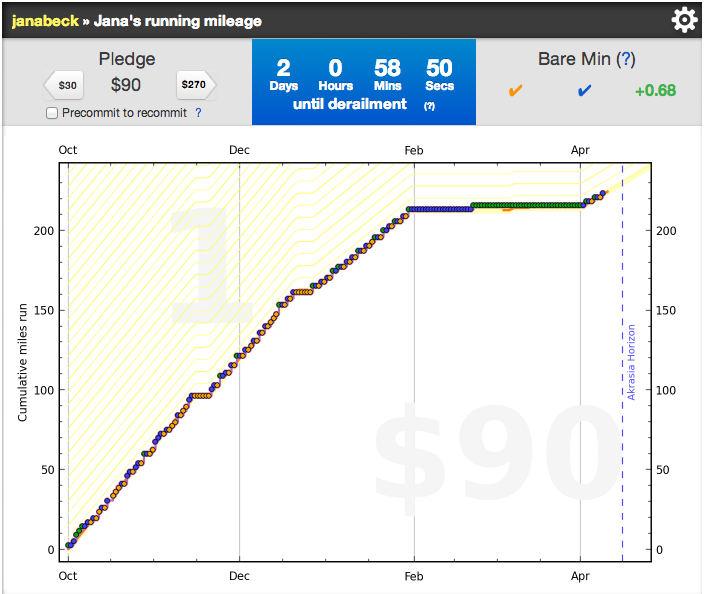

Getting Started with
Self-Tracking
The 3 Questions
- What did you do?
- → What tools do you have access to?
- How did you do it?
- → Active or passive tracking? For how long?
- What did you learn?
- → Motivation.
- Curiosity?
- Specific improvement in a health or behavior outcome?
- → Motivation.
Tools
Researching Tools
- Is it designed for you?
- Data export?
- ...and the usual suspects:
- cost
- ease of use
- community
- etc.
Tools I Use (or Have Used)
- diabetes devices
- continuous glucose monitor (CGM)
- fingerstick blood glucose meter
- insulin pump
- general purpose
- Daytum
- your.flowingdata
- Notational Velocity (nvALT fork) + Simplenote (for syncing)
Tools I Use (or Have Used)
- health-related
- TargetWeight
- MonthlyInfo (menstrual cycle)
- Happiness (mood tracking)
- sleep
Tools I Use (or Have Used)
My Tools 3Tracking Time (and/or Work)
- Passive software watchers:
- Active time loggers (many iPhone and Android apps)
- My solution: a Pomodoro timer that automatically logs successful Pomodoros to your.flowingdata (via Twitter)
- commit to one
- log everything that is best done with focus
Active vs. Passive Tracking
- Active
- Paper logging
(really?!?)

- Simple spreadsheet or Google form
- General or specific purpose apps and devices
- Paper logging
- Passive
Caveat Tracker
(Or: Things to Be Careful Of)
- Beginner's mania
- track ALL the things!
- Can be particularly harmful if you're aiming to change something (health parameter, behavior)
- Self-tracking vs. self-surveillance
- Tracking burnout (and potential solutions)
- Scheduled time off
- Limited (initial) tracking period (weeks? months?)
- Track something fun!
Play with Your Data
- In-app visualization and summary tools
- e.g., my coffee consumption

- e.g., my coffee consumption
- Download your data and start simple:
- Bar or line graph
- Histogram
- Then get fancy
Data Visualization Tools
- For non-coders:
- Excel, Numbers, Open Office, etc.
- Quadrigram
- Processing (programming lite)
- For coders:
- R (open-source statistical software; use ggplot2 for graphics)
- Python:
- numpy, scipy, matplotlib, pandas
- Bokeh (ggplot-like, new project)
- JavaScript:
- D3 (Data-Driven Documents)
- Processing.js (for those familiar with Processing)
Examples
Period Trackers
vs.
backCrazy Correlations
backBeeminder
- good for numeric goals
- lose weight, exercise more, smoke less, etc.
- pay them money if you fail at your goal
back
Beeminding My Running
 back
Beeminding a Noisy Number
back
Fancy 1
Blood Glucose Heatmaps
back
Fancy 2
Blood Glucose Violin Plots
back
Contact Me
/
#